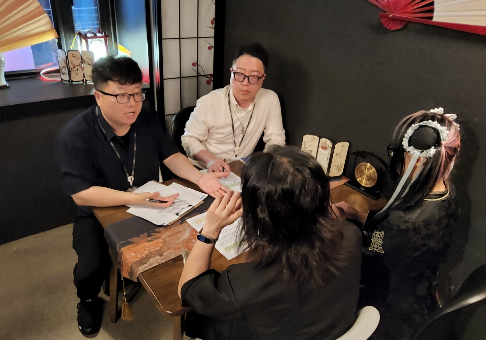

마포구, 홍대 메이드카페 29곳 집중 지도점검 나선다
유흥접객행위·청소년 보호·식품위생법 준수 여부 현장 확인

[시사포커스 / 김재록 기자] 마포구(구청장 유동균)는 8월 24일부터 9월 11일까지 지역 내 메이드카페·집사카페 등 컨셉카페 29곳을 대상으로 실태조사와 지도·점검에 나선다고 밝혔다. 최근 홍대 일대를 중심으로 메이드카페 등 컨셉카페가 늘어나면서 청소년 고용과 영업 방식, 유흥접객행위 가능성 등을 둘러싼 사회적 관심이 높아지고 있는 상황이다. 이러한 가운데 성평등가족부는 이른바 ‘변종 메이드카페’를 인허가 단계에서 유흥주점으로 분류하도록 식품의약품안전처에 제도 개선을 요청한 바 있다.
마포구에 따르면 앞서 지난 6월 식품의약품안전처·서울시와 함께 지역 내 메이드카페 등 28곳을 점검했으며, 당시 식품위생법상 중대한 위반 사항은 확인되지 않았다. 컨셉카페는 식품위생법에 따른 식품접객업으로 신고된 업소로 청소년 고용을 일률적으로 금지하는 업종이 아니기 때문이다. 이번 점검에서 마포구는 종업원의 동석·동반 음주나 과도한 신체 접촉, 특정 메뉴 구매 시 종업원과 함께 업소 밖에서 사진 촬영이나 만남 등 유흥접객행위에 해당할 수 있는 영업행위를 중점 확인한다. 청소년 고용 관련 법령 준수 여부와 주류 판매 시 신분증 확인 절차, 시설기준 및 영업자 준수사항도 살피며, 점검 과정에서 개선이 필요한 사항은 현장에서 지도하고 사회관계망서비스(SNS)를 통한 선정적 홍보에는 시정을 요구할 방침이다. 유동균 마포구청장은 "최근 홍대 일대 컨셉카페를 둘러싼 관심이 높아진 만큼, 이번 점검을 통해 영업자가 지켜야 할 기준을 명확히 안내하겠다"며 "이용자와 종업원 모두가 안심할 수 있는 건전한 운영 문화를 만들어가겠다"고 말했다.
이번 지도점검과 함께 영업자 교육도 병행된다. 동석·동반 음주와 과도한 신체 접촉 금지, 유료 사진 촬영과 이벤트의 영업장 내 진행, 유흥업소를 연상시키는 메뉴 표현 자제 등을 안내하며, 고객의 부당한 요구로부터 종업원을 보호할 수 있도록 영업장 내 안내문 게시도 권고한다. 중대한 위반 사항이 확인되면 관련 절차에 따라 행정처분을 진행한다. 마포구는 이번 점검을 계기로 홍대 일대 컨셉카페의 건전한 운영 기준을 확립하고, 지역 상권과 이용자 모두가 신뢰할 수 있는 환경을 조성해 나갈 계획이다.